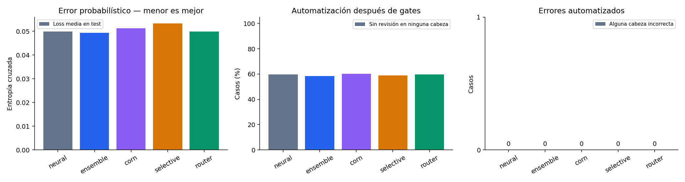

Neural: referencia. Ensemble: promedio de tres redes. CORN: probabilidades ordinales condicionales para Score. Selective: adaptación multisalida de SelectiveNet con selector y cabeza auxiliar. Router: selección fija por cabeza.
El router se fijó antes de calibrar y evaluar test. Estos resultados no cambian las rutas. Que un candidato gane aquí no autoriza producción ni demuestra superioridad general.
| Algoritmo | Loss | Harness | Automatizados | Errores automatizados | Cobertura conjunta de conjuntos | Calidad |
|---|---|---|---|---|---|---|
| neural | 0.04990 | 25/25 | 179/300 | 0 | 75.7% | FAIL |
| ensemble | 0.04942 | 25/25 | 175/300 | 0 | 74.3% | FAIL |
| corn | 0.05134 | 25/25 | 181/300 | 0 | 75.7% | FAIL |
| selective | 0.05330 | 25/25 | 177/300 | 0 | 73.3% | FAIL |
| router | 0.04990 | 25/25 | 179/300 | 0 | 75.7% | FAIL |

| Cabeza | Ruta elegida | Loss en validación del router, antes de calibrar |
|---|---|---|
| clasificacion | neural | neural: 0.1649; ensemble: 0.1668; corn: 0.1649; selective: 0.1748 |
| atencion_prioritaria | neural | neural: 0.0864; ensemble: 0.0861; corn: 0.0862; selective: 0.0932 |
| nivel | neural | neural: 0.1042; ensemble: 0.1049; corn: 0.1496; selective: 0.1180 |
El router elige por menor loss en la mitad de validación reservada para routing, con los umbrales fijados en config/algorithm_router.json. La otra mitad solo decide cuándo detener entrenamiento. No se comparan probabilidades máximas de distintos modelos para elegir por petición.
Todos ven las mismas características numéricas y TF-IDF. Estos experimentos no añaden comprensión mediante un encoder semántico preentrenado. El selector aprende aceptación, pero su score no es probabilidad de corrección. La implementación es una adaptación local de los objetivos publicados, no una reproducción de sus benchmarks.